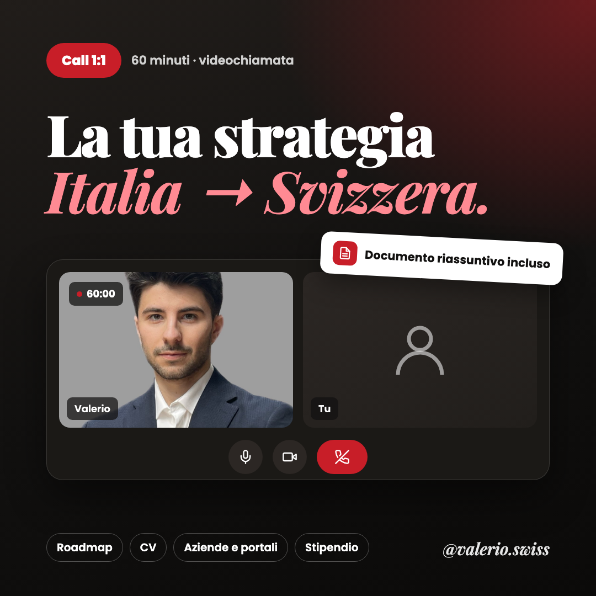

Niente teoria e niente discorsi motivazionali: guardiamo insieme il tuo profilo e costruiamo il piano per arrivare in Svizzera. Dopo la call ricevi tutto per iscritto.
Compresi il documento riassuntivo entro 24 ore e 7 giorni per farmi domande in DM.
Prenota la call · 69 €Scegli giorno e ora, poi paghi in modo sicuro con Stripe.
Prenotando confermi di avere almeno 18 anni e accetti le condizioni: puoi annullare gratis fino a 24 ore prima, con rimborso completo. Se vivi nell'Unione europea e la call avviene entro 14 giorni dall'acquisto, è perché l'hai chiesto tu: dopo la call il recesso non vale più. Se uso le note automatiche di Google Meet te lo dico prima. Privacy.By booking you confirm you are 18 or over and accept the terms: you can cancel free of charge up to 24 hours before, with a full refund. If you live in the European Union and the call takes place within 14 days of purchase, it is because you asked for it: after the call the right of withdrawal no longer applies. If I use Google Meet automatic notes, I tell you beforehand. Privacy.

Scegliamo i punti che contano per te, in base alle tue risposte prima della call.
Il calendario non si carica? Prenota da qui: Calendar not loading? Book here: cal.com/valerioswiss/call
Recensioni vere della call 1:1.
Valerio mi ha aiutato a individuare cosa migliorare, dal CV al numero di candidature da inviare. Quello che mi è piaciuto di più è stato l'approccio tailor-made.
Mi ha colpito l'approccio onesto e pratico: ha chiarito lo stato reale delle assunzioni in grandi aziende e le tempistiche, senza vendere illusioni.
Ho fatto un sacco di domande e Valerio ha sempre risposto senza farmi sentire fuori posto. È stato come avere un tutor personale che ti guida passo dopo passo.
In videochiamata, dal computer o dal telefono. Il link arriva nell'email di conferma insieme al form pre-call. Durante la call potrei usare un assistente per gli appunti, così il riassunto è completo: se preferisci di no, dimmelo all'inizio.
By video, from your computer or phone. The link comes in the confirmation email together with the pre-call form. I may use a note-taking assistant during the call so the summary is complete: if you'd rather I didn't, just tell me at the start.
Sì: fino a 24 ore prima la sposti o la annulli gratis; entro le 24 ore puoi spostarla al massimo una volta. Se non ti presenti senza avvisare, la call non si recupera.
Yes: up to 24 hours before, you can reschedule or cancel for free; within 24 hours you can reschedule once at most. If you don't show up without notice, the call can't be made up.
Sì, è pensata proprio per chi parte: anche "non so da dove cominciare" è un buon punto di partenza, vuol dire che iniziamo dalla diagnosi.
Yes, it's designed for people starting out: even "I don't know where to begin" is a fine starting point, it just means we start with the diagnosis.
Se il tuo problema è soprattutto il CV, parti dal CV Pack. Se ti serve una strategia su settore, città e candidature, la call è la scelta giusta: il CV lo guardiamo comunque insieme.
If your main problem is the CV, start with the CV Pack. If you need a strategy on sector, city and applications, the call is the right choice: we'll look at your CV together anyway.
No, e diffida di chi te lo promette. Ti do metodo, strategia e gli errori da evitare, ma le candidature restano nelle tue mani.
No, and be wary of anyone who promises that. I give you a method, a strategy and the mistakes to avoid, but the applications are still up to you.
Contenuti e servizi offerti a titolo personale: informazioni generali, non consulenza legale, fiscale o finanziaria. Le opinioni sono personali e non rappresentano quelle del mio datore di lavoro.